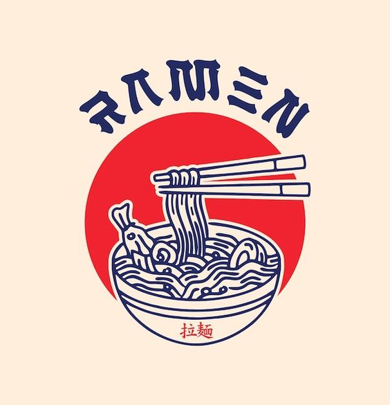
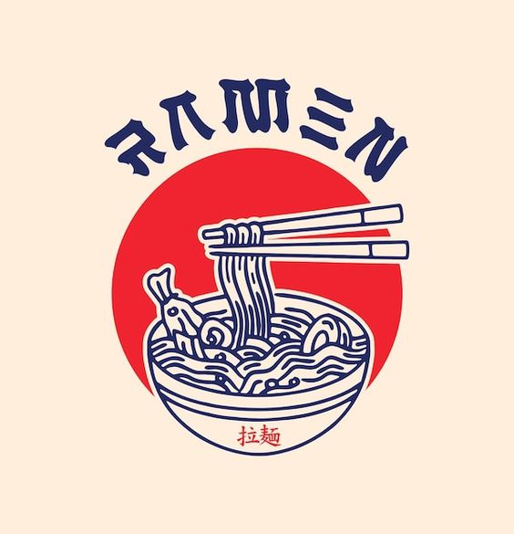

Shrimp noodles bowl, gives you that warm lovely day in winter season to
help you relax up from overwork.
Noodles bowl :
Shrimp Bowl
Shrimp Bowl
Through my experience, any type of things would suite up for this recipe,
if you are allergic to any of the ingredients feel free to use any
Have a warm bowl of Shrimp noodles with me
remember anything that works for you, go for it. this recipe is all about
the spicy broth and the things that go well with it
Here’s how you make it
 

-
1 teaspoons vegetable oil
1 onion, chopped
2 cloves garlic, minced
1 tablespoon minced fresh ginger root
1 pinch crushed red pepper
2 quarts chicken broth
1 cup peeled, diagonally sliced carrots
1 cup diagonally sliced celery
2 cups snow peas
12 ounces fresh shrimp, peeled and deveined
4 ounces rice vermicelli
2 tablespoons soy sauce
¼ teaspoon ground black pepper
- Season shrimp with salt then heat up a pan or wok over high heat
- Cook your shrimp for 1-2 minutes and remove to add back later.
- Prepare your noodles according to the packaging.
- Usually they are pre-cooked so I just needed to soak my noodles in hot water for 1-2 minutes then drain.
- Cut all your vegetables,
- I thinly slice onions, rough chop garlic, broccoli and cabbage.
- Heat your wok over high heat with 1 tbsp of oil then add all your vegetables and cook until softened about 5 minutes.
- Add your drained noodles along with the pre-mixed sauce and continue to mix
- Mix until the sauce has been fully absorbed by your noodles.
- Add the shrimp and cooked edamame at the very end, give it a quick mix and enjoy!
- I top with sesame seeds and green onions.